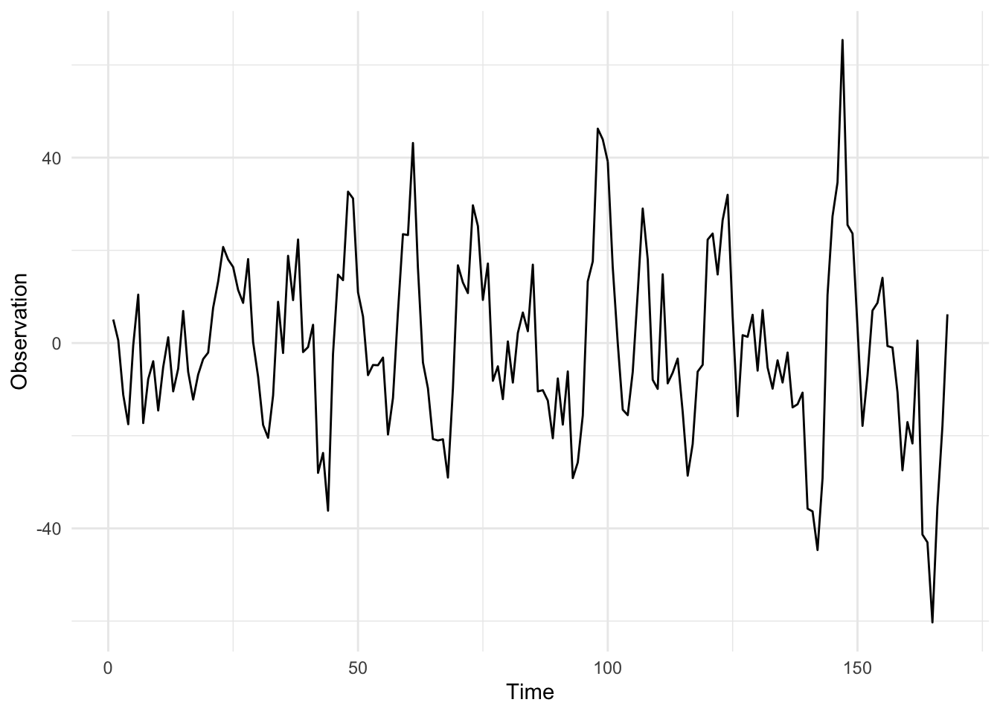

The Seasonal DLM
I introduced the class of state space models called DLMs in a previous post covering the Kalman Filter. The seasonal DLM is similar to the first order DLM, however it incorporates a deterministic transformation to the state, in order to capture cyclic trends. Remember a general DLM can be written as:
\[\begin{align} y_t &= F_t x_t + \nu_t, \qquad \mathcal{N}(0, V_t), \\ x_t &= G_t x_{t-1} + \omega_t, \quad \mathcal{N}(0, W_t). \end{align}\]
In the fourier-form seasonal DLM, the state is transformed by a block diagonal matrix, \(G_t\), containing rotation matrices. The rotation matrix is given by:
$$R = \[\begin{pmatrix} \cos(\omega) & -\sin(\omega) \\ \sin(\omega) & \cos(\omega) \end{pmatrix}\],$$ where \(\omega\) is the frequency of the seasonality. In practice, it is easier to specify the period of the seasonality, \(T\), which is related to the frequency: \(\omega = 2 \pi/T\). This means if we have data measured at hourly intervals and we believe the process has a daily cycle, then we will set \(T = 24\).
In order to model higher harmonics of the seasonality, we combine rotation matrices together into a block diagonal matrix, to form the \(G\) matrix, for instance with 3 harmonics the system matrix is:
\[G = \begin{pmatrix} \cos(\omega) & -\sin(\omega) & 0 & 0 & 0 & 0\\ \sin(\omega) & \cos(\omega) & 0 & 0 & 0 & 0 \\ 0 & 0 & \cos(2\omega) & -\sin(2\omega) & 0& 0 \\ 0 & 0 & \sin(2\omega) & \cos(2\omega) & 0 & 0 \\ 0 & 0 & 0 & 0 & \cos(3\omega) & -\sin(3\omega) \\ 0 & 0 & 0 & 0 & \sin(3\omega) & \cos(3\omega) \\ \end{pmatrix}.\]
In this case, the latent state, \(x_t\) is six-dimensional. This means system evolution variance-covariance matrix, \(W_t\) is a six by six matrix.
First we should make a case class in Scala representing a DLM. A case class in Scala is a class with a default apply method used to construct instances of the class. The case class also has getter methods which can be used to access the values of the class. The case class will be for a DLM with constant \(F\) and \(G\) matrices.
import breeze.linalg._
case class Dlm(f: DenseMatrix[Double], g: DenseMatrix[Double])Note that, for univariate observations \(F\) will be a row vector, the recommended way to specify row vectors using Breeze is to use a matrix with a single row. The DLM also has associated parameters which we will assume are constant and write as a case class.
case class Parameters(v: Double, w: DenseMatrix[Double], m0: DenseVector[Double], c0: DenseMatrix[Double])Then we can add a method to simulate forward given a value of the Parameters, firstly we will write a single step of the simulation:
case class Data(time: Double, observation: Double, state: DenseVector[Double])
def simStep(p: Parameters, model: Dlm): Data => Rand[Data] = d => {
for {
w <- MultivariateGaussian(DenseVector.zeros(p.w.cols), p.w)
x1 = model.g * d.state + w
v <- Gaussian(0, p.v)
y = model.f.toDenseVector dot x1 + v
} yield Data(d.time + 1.0, y, x1)
}This function contains a for comprehension, the <- symbol represents either a map or a flatMap. Since the w and v are Rand[Double] values, we need to access the value inside of the Rand and perform a function on it, the for comprehension desugars to:
MultivariateGaussian(DenseVector.zeros(p.w.cols), p.w).
flatMap(w => {
val x1 = model.g * d.state + w
Gaussian(0, p.v).map(v => {
val y = model.f.toDenseVector dot x1 + v
Data(d.time + 1.0, y, x1)
})}
)The desugared chain of flatMap and map evaluates to the same result, but the for-comprehension is more readable. This syntax provides a clean and elegent way to work within the context of a Monad, Rand is an example of a Monad representing a distribution.
Now, we can use the MarkovChain breeze object to simulate the full series:
def simMarkov(p: Parameters, model: Dlm): Rand[Process[Data]] = {
for {
x0 <- MultivariateGaussian(p.m0, p.c0)
y0 <- Gaussian(model.f.toDenseVector dot x0, p.v)
init = Data(0.0, y0, x0)
} yield MarkovChain(init)(simStep(p, model))
}Note that the Markov chain is a Rand[Process[Double]], this is not the most elegant and I’m open to suggestions on a better way to formulate this. Once we have defined a Markov chain, we must draw from it which returns a Process[Double], the initial draw is to sample from the initial state distribution \(\mathcal{N}(m_0, C_0)\). Next, we can sample from the Process and plot it. A simulation from the seasonal DLM, with parameters \(V = 3\) and \(W = I_6\), is given below:
Citation
BibTeX citation:
@online{law2016,
author = {Jonny Law},
title = {Seasonal {DLM}},
date = {2016-12-13},
langid = {en}
}
For attribution, please cite this work as:
Jonny Law. 2016. “Seasonal DLM.” December 13, 2016.